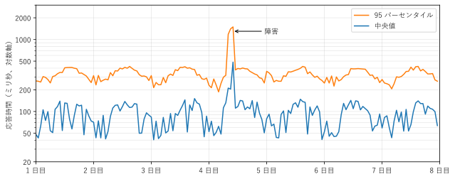
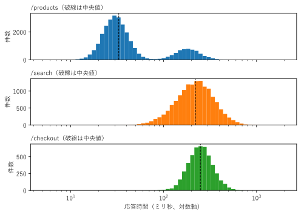
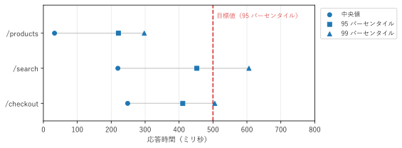

第 15 章 グラフを選ぶ
最後の章では、これまでの章の内容をまとめ、目的からグラフを選ぶ手順を示す。次に、1 つのデータを複数のグラフで描き比べるケーススタディを行い、伝わるグラフに仕上げるためのチェックリストを示す。最後に、本書で扱わなかった対話的なグラフを紹介する。
目的からグラフを選ぶ
グラフを選ぶときは、「どのグラフが使えるか」ではなく、「何を見せたいか」から考える。図 66 は、見せたいものとデータの性質から、グラフの候補を絞り込む判断の流れである。
図 66 目的からグラフを選ぶための判断の流れ
この図は出発点にすぎない。同じ目的でも、データの量、読み手、伝える媒体（画面、印刷、スライド）によって、適したグラフは変わる。迷ったときは、候補のグラフを実際に描き比べるのが確実である。各グラフの向き不向きは、付録 A グラフ早見表にまとめた。
1// グラフを選ぶための判断フロー
2// 「何を見せたいか」から出発し、データの性質で候補を絞る
3digraph choose {
4 rankdir=LR;
5 node [fontname="Yu Gothic", fontsize=11];
6 edge [fontname="Yu Gothic", fontsize=9];
7
8 start [label="何を見せたいか", shape=box, style="rounded,filled",
9 fillcolor="#4e79a7", fontcolor=white];
10
11 node [shape=box, style="rounded,filled", fillcolor="#f6e3b4"];
12 compare [label="量の比較"];
13 distribution [label="分布"];
14 relation [label="関係"];
15 composition [label="構成比"];
16 time [label="時間変化"];
17 structure [label="構造"];
18
19 node [shape=box, style=filled, fillcolor="#dbe9f6"];
20 bar [label="棒グラフ\nドットプロット"];
21 grouped [label="グループ化棒グラフ\nヒートマップ"];
22 hist [label="ヒストグラム\nECDF"];
23 box [label="箱ひげ図\nバイオリンプロット"];
24 scatter [label="散布図\n（多いときは hexbin）"];
25 matrix [label="散布図行列\nヒートマップ\n平行座標プロット"];
26 stacked [label="100% 積み上げ棒グラフ\n（項目が少なければ円グラフ）"];
27 treemap [label="ツリーマップ\nサンバースト図"];
28 line [label="折れ線グラフ\n（段階的ならステップ）"];
29 area [label="積み上げ面グラフ"];
30 gantt [label="ガントチャート"];
31 tree [label="木構造図"];
32 flow [label="フローチャート\n状態遷移図\nサンキー図"];
33 network [label="ノードリンク図\n（密なら隣接行列）"];
34
35 start -> {compare distribution relation composition time structure};
36 compare -> bar [label="項目が 1 系列"];
37 compare -> grouped [label="項目 × 系列"];
38 distribution -> hist [label="1 グループ"];
39 distribution -> box [label="複数グループ"];
40 relation -> scatter [label="2 変数"];
41 relation -> matrix [label="3 変数以上"];
42 composition -> stacked [label="階層なし"];
43 composition -> treemap [label="階層あり"];
44 time -> line [label="値の推移"];
45 time -> area [label="内訳の推移"];
46 time -> gantt [label="期間"];
47 structure -> tree [label="親子関係"];
48 structure -> flow [label="流れ・手順"];
49 structure -> network [label="任意のつながり"];
50}
ケーススタディ：Web API の応答時間
架空の Web API のアクセスログを使って、同じデータを目的に応じて描き分ける。ログは 1 週間分、約 5 万件のリクエストからなり、各リクエストについて、受け付けた時刻、エンドポイント（/products、/search、/checkout）、応答時間（ミリ秒）を記録している。データは補助モジュール server_log.py で作る。
運用の担当者として、このログから次の 3 つの問いに答えたい。
応答時間は、時間とともにどう変わったか。異常はあったか。
応答時間はどのように分布しているか。
エンドポイントごとの応答時間は、目標を満たしているか。
問い 1：時間変化を見る
時間変化を見るには、折れ線グラフを使う（第 7 章）。ただし、5 万件の点をそのまま描いても読めないので、1 時間ごとに集計する。応答時間は右に裾の長い分布になるため、平均ではなく、中央値と 95 パーセンタイルを集計する（図 67）。

図 67 1 時間ごとの応答時間の中央値と 95 パーセンタイル（縦軸は対数軸）
4 日目の 8 時頃から 3 時間、応答時間が中央値、95 パーセンタイルとも数倍に跳ね上がっている。障害が発生したと考えられる。
95 パーセンタイルは、毎日、昼間に高く夜間に低い周期を持つ。リクエストの多い時間帯に遅くなっていることが分かる。
障害の時間帯の 95 パーセンタイルは 1,000 ミリ秒を超え、通常の時間帯（約 200 から 400 ミリ秒）の数倍になるため、縦軸を対数軸にして、通常の時間帯の変化と障害の時間帯を 1 つの図に収めている。
17def hourly_percentiles(times: np.ndarray, response: np.ndarray,
18 q: float) -> np.ndarray:
19 """1 時間ごとの応答時間の q パーセンタイルを返す."""
20 hours = times.astype(int)
21 return np.array([np.percentile(response[hours == h], q)
22 for h in range(HOURS)])
サンプルの全体：ch15_case_timeseries.py、server_log.py
問い 2：分布を見る
次に、障害の時間帯を除いて、エンドポイントごとの応答時間の分布をヒストグラムで描く（第 4 章）。応答時間は数ミリ秒から 1 秒以上まで広がるので、横軸を対数軸にし、階級も対数の目盛りで等間隔に取る（図 68）。

図 68 エンドポイントごとの応答時間のヒストグラム（横軸は対数軸）
/productsの分布には、30 ミリ秒付近と 180 ミリ秒付近の 2 つの山がある。キャッシュに当たったリクエストと、外れたリクエストと考えられる。中央値（破線）は速い方の山にあり、中央値だけを見ると遅いリクエストの存在に気付かない。/searchは、他の 2 つより分布の幅が広い。問い 1 で見た、時間帯による遅延の影響と考えられる。/checkoutは、山が 1 つで幅も狭く、安定している。
時間変化の図では、エンドポイントの違いやキャッシュの影響は見えなかった。分布を見ることで、問題の原因の候補が具体的になる。
19def create_figure() -> Figure:
20 """エンドポイントごとの応答時間のヒストグラムを縦に並べて描く."""
21 times, endpoints, response = make_log()
22 normal = ((times < INCIDENT_START)
23 | (times >= INCIDENT_START + INCIDENT_HOURS))
24 bins = np.logspace(np.log10(5), np.log10(2000), 60)
25 fig, axes = plt.subplots(len(ENDPOINTS), 1, figsize=(7, 5),
26 sharex=True)
27 for index, (ax, name) in enumerate(zip(axes, ENDPOINTS)):
28 values = response[normal & (endpoints == index)]
29 ax.hist(values, bins=bins, color=f"C{index}")
30 ax.axvline(np.median(values), color="black", linestyle="--",
31 linewidth=1)
32 ax.set_title(f"{name}（破線は中央値）", loc="left", fontsize=10)
33 ax.set_ylabel("件数")
34 axes[-1].set_xscale("log")
35 axes[-1].set_xlabel("応答時間（ミリ秒、対数軸）")
36 fig.tight_layout()
37 return fig
サンプルの全体：ch15_case_distribution.py
問い 3：目標と比較する
最後に、各エンドポイントの応答時間が目標を満たしているかを示す。ここでは、SLO（サービスレベル目標）を「95 パーセンタイルが 500 ミリ秒以内」とする。報告のための図なので、比較に必要な値だけをドットプロットで示す（第 3 章、図 69）。

図 69 エンドポイントごとの応答時間のパーセンタイルと目標値（赤い破線）
3 つのエンドポイントとも、95 パーセンタイル（四角）は目標値を下回っている。
/searchの 95 パーセンタイル（約 450 ミリ秒）は目標値に最も近く、99 パーセンタイル（約 600 ミリ秒）は目標値を大きく超えている。問い 1 で見たように、リクエストが増える時間帯に遅くなるので、利用者が増えると目標を守れなくなるおそれがある。改善の優先度が高い。/productsは、中央値と 95 パーセンタイルの差が大きい。キャッシュに外れたリクエストが遅いためで、問い 2 の結果と一致する。
23def create_figure() -> Figure:
24 """エンドポイントごとのパーセンタイルのドットプロットを描く."""
25 times, endpoints, response = make_log()
26 normal = ((times < INCIDENT_START)
27 | (times >= INCIDENT_START + INCIDENT_HOURS))
28 fig, ax = plt.subplots(figsize=(8, 3))
29 for row, name in enumerate(ENDPOINTS):
30 values = response[normal & (endpoints == row)]
31 points = [np.percentile(values, q) for q, _, _ in PERCENTILES]
32 ax.plot([points[0], points[-1]], [row, row], color="lightgray",
33 zorder=1)
34 for (_, label, marker), point in zip(PERCENTILES, points):
35 ax.scatter(point, row, marker=marker, color="C0", zorder=2,
36 label=label if row == 0 else None)
37 ax.axvline(SLO, color="C3", linestyle="--")
38 ax.text(SLO + 10, -0.5, "目標値（95 パーセンタイル）", color="C3",
39 va="center", fontsize=9)
40 ax.set_yticks(range(len(ENDPOINTS)), ENDPOINTS)
41 ax.set_ylim(len(ENDPOINTS) - 0.5, -0.8) # 1 つ目を上に置き、上に余白を取る
42 ax.set_xlim(0, 800)
43 ax.set_xlabel("応答時間（ミリ秒）")
44 ax.grid(axis="x", alpha=0.3)
45 ax.legend(loc="upper left", bbox_to_anchor=(1.01, 1), fontsize=9)
46 fig.tight_layout()
47 return fig
サンプルの全体：ch15_case_comparison.py
ケーススタディのまとめ
同じログから、問いに応じて 3 つの異なるグラフを描いた。
問い |
グラフ |
分かったこと |
|---|---|---|
時間変化 |
折れ線グラフ（対数軸） |
4 日目の障害と、昼間に遅くなる日周期 |
分布 |
ヒストグラム（対数軸） |
|
目標との比較 |
ドットプロット |
すべて目標を満たすが、 |
1 つのグラフですべてを示そうとせず、問いごとにグラフを分けることが重要である。探索の段階では多くのグラフを描き、伝達の段階では、結論を支えるグラフだけを選んで仕上げる。
伝わるグラフに仕上げる
伝達のためのグラフを仕上げるときは、次の項目を確認する。
観点 |
確認する項目 |
|---|---|
目的 |
グラフで伝えたい結論を 1 文で言えるか。その結論に合ったグラフを選んでいるか。 |
タイトル |
何の、いつの、どこのデータかが分かるか。結論そのものをタイトルにする（「/search の余裕が最も小さい」）のも有効である。 |
軸 |
軸ラベルに単位があるか。棒グラフの縦軸は 0 から始まっているか。対数軸であることを明示しているか。 |
凡例と注釈 |
凡例は必要なときだけ付けているか。注目してほしい点に注釈を付けているか。 |
色 |
色に意味があるか。強調したい部分以外は目立たない色にしているか。色だけに頼らず、形やラベルでも区別できるか。 |
正確さ |
第 14 章の誤解を招く描き方（軸の切断、3D、二重軸、面積の誇張など）をしていないか。 |
出典 |
データの出典、集計の期間や条件を示しているか。 |
対話的なグラフ
本書では静止画のグラフを扱ったが、Web ブラウザーやノートブック（Jupyter など）では、マウスで拡大、絞り込み、値の表示ができる対話的なグラフも使える。点の多いデータの探索や、ダッシュボードでの監視に便利である。代表的なライブラリを紹介する。
ライブラリ |
特徴 |
|---|---|
Plotly |
Python から対話的なグラフを手軽に描ける。拡大、ツールチップ（点の値の表示）、凡例による系列の表示の切り替えが標準で使える。Dash と組み合わせると Web アプリケーションを作れる。 |
Bokeh |
Python で書いたグラフを、Web ブラウザーで動く対話的なグラフとして出力する。複数のグラフの連動や、大量のデータの表示に強い。 |
Altair |
Vega-Lite に基づく宣言的なライブラリ。データの列と視覚変数の対応を宣言する書き方で、簡潔にグラフを記述できる。 |
D3.js |
JavaScript のライブラリ。データと Web ページの要素を対応付け、自由度の高い可視化を作れる。習得には時間がかかる。 |
対話的なグラフでも、本書で説明したグラフの選び方や注意点はそのまま当てはまる。対話的な機能は、静止画の欠点（点が多すぎる、3D の視点が固定される、など）を補う手段と考えるとよい。
まとめ
グラフは「何を見せたいか」から選ぶ。候補が複数あれば描き比べる。
1 つのデータからでも、問いに応じて複数のグラフを描き分ける。
伝達のためのグラフは、チェックリストで仕上げを確認する。
対話的なグラフは、探索や監視で静止画の欠点を補う。